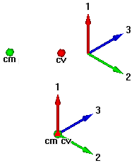

Using the Data Management tab
Solid Edge offers quick access to data management functionality on the Data Management tab. For detailed information about each command, hover over the command icon and then press F1. To use the Data Management tab, you must set up Solid Edge data management. For information about setting up Solid Edge data management, see Getting started with Solid Edge data management.
The commands on the Data Management tab help you manage your documents within Solid Edge. These basic tools capture properties, prevent file and part number duplication, and provide fast searching and where-used results. Additional tools provide support for revisions as well as controlled distribution through cloud file services.
Use the Data Management tab commands when you do not need the automated processes provided by document management in Teamcenter.
|
Use this command |
To do this |
Example |
||||||
|
Display Status |
Show or hide the current status of a part file in PathFinder, or the current status of all parts and subassemblies in Assembly PathFinder. |
|
||||||
|
Update Status Info |
Retrieves changed status information. |
Use this command:
|
||||||
|
Open Drawing |
Quickly find and open drawings associated with your document. |
For more information, see Open drawings. |
||||||
|
Where Used |
Finds the locations of documents (models, drawings, markup, text) that are associated with the currently selected file. You can search for documents anywhere on your network, including a managed library. |
Find all of the part files and drawing files linked to an assembly. After you perform a where-used search on a document, you can expand the nodes in the search results until you get the information you need. |
||||||
|
Save As |
Saves the active document file in any of the formats you choose from the list:
|
In the Save As dialog box, you can add these key properties used to track and control the document:
Note:
The naming conventions are based on specifications on the Manage tab, Solid Edge Options dialog box. |
||||||
|
|
Creates a new revision or replaces a document with an existing part revision. |
Create a new revision of a document. The file name is based on specifications on the General tab (Solid Edge Options dialog box) and the location is based on the Life Cycle specifications on the Manage tab. |
||||||
|
Get Latest |
Finds the latest revision for any part in an assembly. You can replace all parts in an assembly that have a newer revision available with their latest revision, as well as replace a single part with its latest released revision. |
For more information, see Find and replace latest revisions. |
||||||
|
Check Out |
Makes a file selected in Assembly PathFinder unavailable for others to change while you are working in it. |
Displays the In Work |
||||||
|
Check In |
Makes a file selected in Assembly PathFinder available for others to modify. |
Displays the Available |
||||||
|
Edit Links |
For an assembly document, shows the links to source files that are used in it. |
Lists the part files and assembly files and their location. You can replace a source file with a different revision or with a different file. |
||||||
|
File Properties |
Opens the File Properties dialog box for the active document. |
Change the status of a document and more. |
||||||
|
Property Manager |
Opens the Property Manager dialog box to edit the properties for the active document, a group of documents you define, or all the documents used in an assembly or assembly drawing. |
Shows a table-driven user interface that makes it easy to view and edit all the document properties for a group of documents at one time. Viewing all the document properties for a group of documents simultaneously also makes it easier to ensure that the document properties are defined completely and uniformly. |
||||||
|
Properties |
Opens the Physical Properties dialog box for you to calculate the physical properties of parts and assemblies. |
Place symbols on the part or assembly to show the center of mass location, center of volume location, and principal axis orientation.  |
||||||
|
Design Manager |
Tracks revisions of documents that are shared and reused, as well as links between them. |
See a Typical Design Manager workflow. To learn more about Design Manager, see Welcome to Design Manager. |
||||||
|
|
Reviews and changes document status using workflows. |
For more information, see Release documents (Solid Edge data management). |
 Available
Available In Review
In Review Obsolete
Obsolete Revisions
Revisions icon to the left of the file name, shows the document name in green text, and locks
the document so that other users cannot make modifications.
icon to the left of the file name, shows the document name in green text, and locks
the document so that other users cannot make modifications. icon to the left of the file name, shows the document name in black text, and unlocks
the document so that other users can make modifications.
icon to the left of the file name, shows the document name in black text, and unlocks
the document so that other users can make modifications. One Step Workflow
One Step Workflow